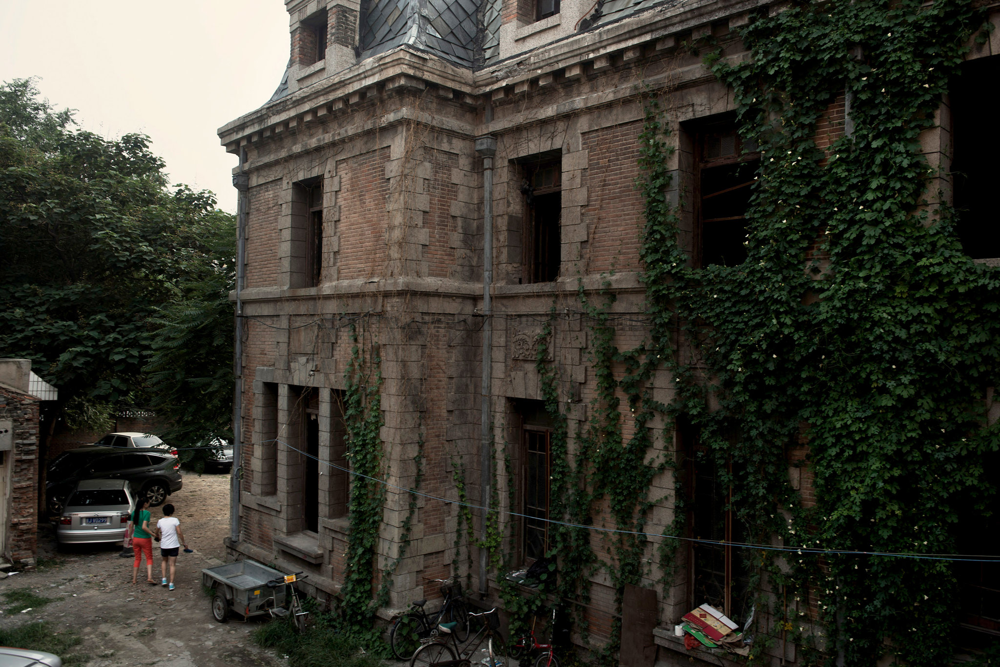
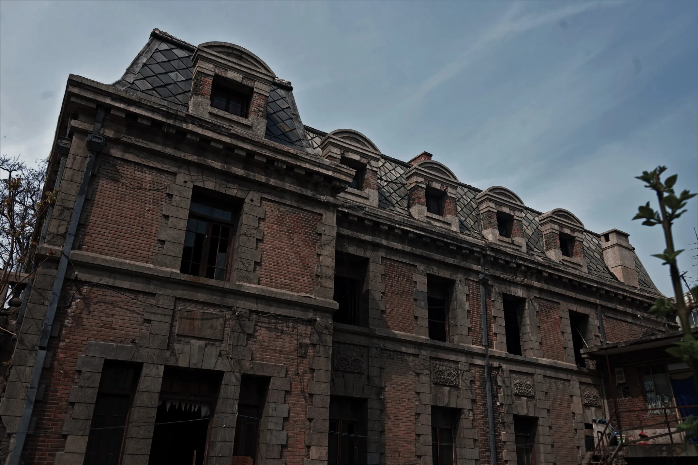
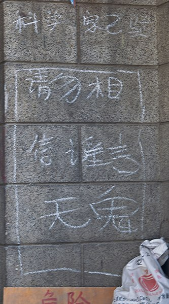

| |
Haunted Places | Paranormal Activities | Exorcisms & Possessions | Social Platforms | Horror Movies | Common Signs | Contact Us |
|---|
Chaonei No. 81 (Chaonei Church)Dongcheng District, Beijing, China |
Shadowy figures in the window, chilling entrance during the summer, the old and haunted church in Beijing called Chaonei No. 81, keeps its secrets close to the chest. The famous haunted house is believed to be haunted by a woman said to have taken her life inside.

Chaonei No. 81 ( 朝内81号), also called Chaonei Church as it was built with that in mind, perhaps, the records aren’t clear. The French reimagined baroque architecture from the 20th century stands out amongst the modern Beijing skyscrapers and the Ming dynasty buddhist temples.
Out of place it has passed from a French manager of the railway or Christian missionaries, different governmental members of the Chinese Republic as well as the Catholic Church. But one thing remains the same, the rumours about a restless spirit that lingers, no matter who lives there.
The Mystery of the Chaonei Church Building
The story behind the supposed haunted house at Chaonei No. 81 is hard to get straight. As with a lot of buildings before the formation of the People’s Republic of China was formed, because of missing paperwork. Who built the Chaonei Church? Was it the French manager of the railway? Or it might even have been the Qing imperial family building it for the British to use as a church? However it is believed to have been built around 1910, although some claim it is even older.
By the neighbouring hutong, the traditional streets in Beijing, the house has always been remembered as haunted. And even during the 1970s, during the cultural revolution, the neighbours remember the Red Guard that lived in the Chaonei Church, got so frightened after staying inside of the haunted house, they had to leave after a few days.

The Woman Hanging from the Rafters
But who frightened its inhabitants, that even the red guard couldn’t handle? According to the most commonly told legend, it is to a woman that once resided in Chaonei No. 81. Or rather, a scorned woman that used to live there, as most haunted histories start with.
The woman that used to live in the Chaonei Church is said to have been a wife or maybe a lover of an officer of the Kuomintang (KMT, or the nationalist party of China) that fought against the communist party during the Chinese civil war in the 1940s. The nationalist lost, and fled to Taiwan as the communist came into power.
The woman was allegedly left behind by her officer man who fled with the army to Taiwan, and she is said to have hung herself from the rafters of the house.
Whether the outcome of the war had anything to do with her death is debatable, as some suggest it was more that the officer was never at home, not paying her the attention she needed than the victory of the communists that led her to her decision of taking her life in the Chaonei Church.
Her existence at all is debatable as a lot of things during the civil war are lost, forgotten or even hidden away and a lot of documentation to confirm or deny the story is not there. What we can go by is the word of mouth however, and many that have stayed in Chaonei No. 81 knowing its history say there was never a KMT officer living there, and no woman hung herself in the rafters.
The history behind Chaonei No. 81 is clouded in mystery, and there seems that no one can really agree on one account. But ghost stories have their own way of ignoring this, and sneaking their way into the mind of those around anyway. And according to the locals, this place has always been haunted. The locals persist in their own lore that she can indeed be heard, especially on those stormy nights, screaming from the empty house during thunder.
The Vanishing Workers From the Chaonei Church
Even the construction of the house has been up for dispute with strange tales from the Chaonei Church. Like the story of a British priest who supposedly built on the property disappeared before being able to build the church. When a search party was sent, they supposedly found a secret tunnel leading all the way northeast of the premise to the Dashanzi neighborhood.
There have also been three people, working on construction down in the basement in the building next to Chaonei No. 81 that supposedly vanished into thin air. They got drunk on the job and decided to break into the house by breaking the thin wall that separated the two houses. They were never seen again according to the reports.
The House that Never Dies
A message to the entrance is put up, telling the visitors that there are no ghosts residing there, contrary to local beliefs, urging the paranormal seekers to stay away from the Chaonei Church.

Especially after the horror movie, The House that Never Dies, inspired by the the haunted legends of Chaonei No. 81 and its story, the interest of it came back. And after its release in 2014, up to five hundred people crowded outside the house, causing the catholic church to close the gates, only letting a few in at the time.
In 2016 however, Chaonei No. 81. interior and outside was renovated and rented out. Perhaps that is what it took to get rid of the spirit and the lore seeping from the old bricks of the Chaonei Church. But there are also those claiming they have an uneasy feeling of dread when walking by the house. And even in the hot summer, with the sun scorching right at the door, the doorway of the mansion somehow always feels cooler than in the shade.
Beyond The Veil |
||
|---|---|---|
|
Explore the unexplained and discover mysteries that challenge the ordinary. |
||
|
||
|
|